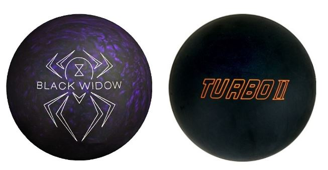
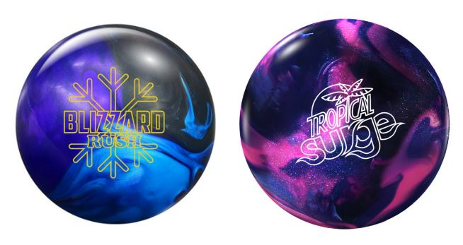
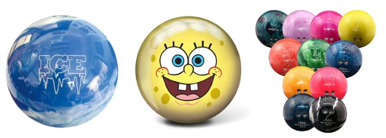
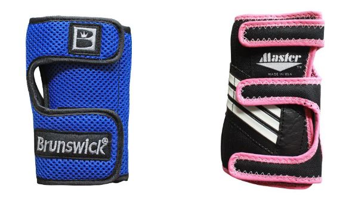
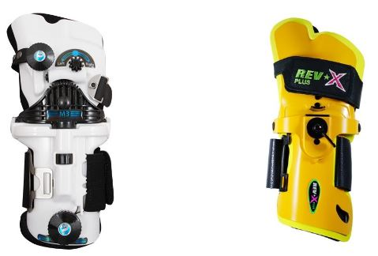
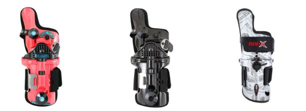
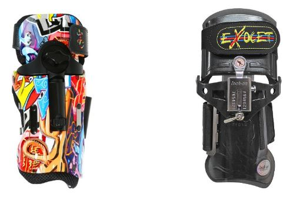
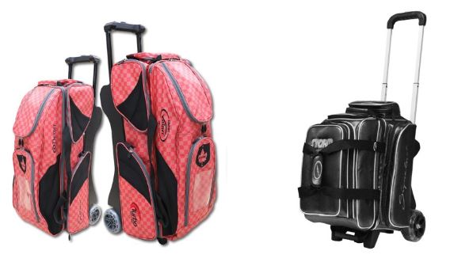

볼링공
미국산 게임이다보니 공의 무게는 파운드로 센다. 공의 무게는 4~16파운드(1.82kg~7.26kg)까지 정수로 세지만, 이는 소수점 아래 자리수를 버리고 표시한 것이며, 같은 파운드 수의 공이라도 실제 무게에는 차이가 있다. 커스텀 볼 구매 시에는 공의 스펙에 소수점 아래까지 온스(oz)로 표기되어 있으니 참고할 것. 규정상 max인 16파운드는 약 7.26kg이다.
1.중성볼
공 내부에 코어가 들어있지만 그 크기가 작아서 다소 적은 훅이 걸리게 된다.
(코어 : 볼링공 안에 들어있는 쇳조각. 디자인과 위치에 의해 공의 궤도와 스타일이 조금씩 달라진다.
2.소프트볼
초구볼이라고도 불리며, 코어가 크게 들어있어서 큰 훅을 만들어 낼 수 있다. 회사마다 그리고 각 제품마다 디자인이 다르기 때문에 공을 굴렸을 때 공의 궤도와 그 특성이 다르다.
3.하드볼
커버볼, 스페어볼로도 불리며, 공 내부에 코어가 없어서 회전이 잘 걸리지 않는 공을 의미한다. (코어가 있는 공도 있지만 회전이 잘 걸리지 않는다는 부분에서 일치한다.)
보통 볼링장에 가면 흔하게 볼 수 있는 하우스볼도 하드볼이라고 볼 수 있다. 외형 그림에 대한 자유도가 꽤 높은편에 속한다.
손목보호대(볼링아대)
훅 볼을 쉽게 던지기 위해 아대를 사용할 수도 있다. 훅을 던지기 위해선 공에 공의 진행방향과는 다른 방향으로 회전을 걸어야 하는데, 회전 걸기의 기본은 릴리스 직전에 손을 공의 아래, 혹은 공의 측면에 위치시키고 공을 놓는 순간 밀어올리는 것이다.
초심자나 기본적인 근력이 부족한 경우에는 이것이 쉽지 않은데, 아대의 손등 부분엔 철판이 덧대어져 있어 아대를 차고 공을 던지면 자연스럽게 손이 공의 측면에 위치하게 된다. 초심자라 하더라도 아대만 차면 상당한 수준의 회전이 걸리며, 훅 포텐셜이 높은 볼이라면 프로 못지않게 확확 휘는 모습을 볼 수있다. 물론 지공에 따라 다르겠지만 일단 아대는 손목을 보호하려고 끼는 것이다.
1.A 아대
PBA의 프로볼러 딕 웨버가 고안하고 Master사에서 생상된 아대로 손목이 뒤로 젖혀지는 것을 방지하여 손목을 보호하는 역할을 하는 아대이다. 볼에 회전을 걸어주거나, 투구할 때 릴리즈타이밍(볼링공이 손에서 빠지는 타이밍)에 크게 영향을 주지 않는다.
따라서 주로 초보자나 여성들이 사용하기에 적합하다.
몽구스 아대
A 아대가 단순히 손목을 보호하는 용도로 개발되었다면 몽구스 아대는 손목을 포함해 중지와 약지도 뒤로 젖혀지는 것을 방지한다. 리프팅에 도움을 주어 공의 회전량을 증가시키는데 효과가 있지만, 생각보다 훅을 많이 발생시키지 않는다.
주로 초보자들의 백업볼 방지와 여성볼러에게 도움이 된다.
코브라 아대
몽구스 아대와 달리 검지만 받쳐주어 로테이션양으로 증가시켜주고, 엄지타이밍을 빠르게 해주며, 밀어주는 힘의 증가로 강한 훅을 만들어준다. 다만 A 아대나 맨손을 공을 굴릴 때 빠른 타이밍과 로테이션양 때문에 얼리턴이나 오버턴이 발생할 확률이 높다.
스콜피온 아대
몽구스, 코브라 아대와 달리 손가락을 받쳐주지 않는다. 몽구스는 모두, 코브라는 검지만 받쳐주고, 스콜피온은 손가락을 받쳐주지 않는다고 생각하면 편하다.
볼링 장비 추천영상
볼링화

레인에 오를 때는 레인의 보호와 스텝을 위하여 전용 볼링화를 신게 된다. 일반 운동화와 달리 편편한 가죽 재질로 되어있어 스텝을 밟을 시 슬라이딩이 용이하고 레인에 손상을 주지도 않는다.
볼링장에서 대여하는 볼링화일 경우, 양쪽 발바닥이 맨들맨들한 가죽 재질이지만, 개인 볼링화는 오른손잡이인지 왼손잡이인지에 따라 미끄러지지 않는 쪽과 미끄러지는 쪽이 다르다. 예컨대 오른손잡이일 경우, 오른발바닥은 고무창이 덧대있는 식이다. 개인 볼링화 중 가격이 좀 나가는 제품들은 슬라이딩 정도를 볼링화의 솔과 힐을 탈부착식으로 변경하여 조절할 수 있다.
일반 이용객의 경우 볼링장에서 볼링화를 대여하는데, 일반적으로 1000원 정도의 대여료를 지불해야 하며 볼링장에 따라 대화료라고 표기하는 경우도 많아 처음 방문하는 이용객들 중 일부는 볼링장 직원과의 상담료 같은 것으로 오해하기도 한다. 살균처리 같은 것에 소홀하여 위생 문제로 논란이 된 적도 있다. 동호회 소속이나 프로급 이용객들은 대부분 개인 구입한 전용 볼링화를 지참한다.
본격적인 취미로 볼링을 시작한 사람들에게 가장 추천하는 것이 바로 볼링화 구매다. 볼링공보다 일단 개인 볼링화를 먼저 구매하기를 추천한다. 대화료를 아낄 수도 있고, 자세 잡는데도 도움이 되기 때문. 볼링장에 비치된 볼링화들은 밑창이 많이 닳은 경우가 대부분이라 초보들이 매장 내 볼링화를 쓰다보면 중심을 못잡거나 미끄러져서 넘어지는 경우가 잦다.
볼링가방
볼링 가방은 공을 담을 수 있는 수와 바퀴로 이름이 '1볼(롤러)백','2볼(롤러)백','3볼(롤러)백'으로 나뉜다. 이 외에도 4볼백과 6볼백도 있는 것으로 확인했다.
롤러라는 말이 있는 것과 없는 것의 차이는 바퀴의 유무이다. 가방에 바퀴가 달려있어서 끌고 다닐 수 있다면 롤러라는 말이 붙고, 그렇지 않으면 그냥 1볼백, 2볼백처럼 롤럴는 말이 붙지 않는다. 공의 무게상 바퀴가 있는 제품을 구매하는 곳이 좋다.